收录于合集

今日上午9时许，“一带一路”国际合作高峰论坛开幕式在北京国家会议中心如期顺利举行， 来自130多个国家的约1500名各界贵宾出席了本次论坛。国政学人对会议开幕前后的重要快讯进行整理汇总，以此可窥见一些主要国家对于“一带一路”的看法与态度。
路透社5月13日报道，此次加入亚投行的新成员是巴林、玻利维亚、智利、塞浦路斯、希腊、罗马尼亚和萨摩亚，它们的加入使亚投行的成员总数达到77个。
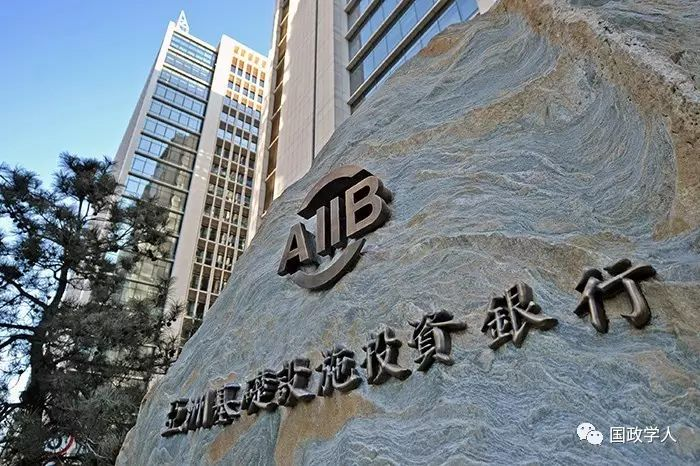
据共同社5月12日报道，该社12日获悉，日本安倍晋三政府内再次出现了参加中国主导的亚投行的主张。有意见指出，除了担心日本落后于大势的危机感外，还存在着通过向中国靠拢摸索改善关系的意图。报道称，安倍政府内部之所以出现参加亚投行的主张，是出于对迄今保持一致步调的美国可能转而加盟的警惕心理。
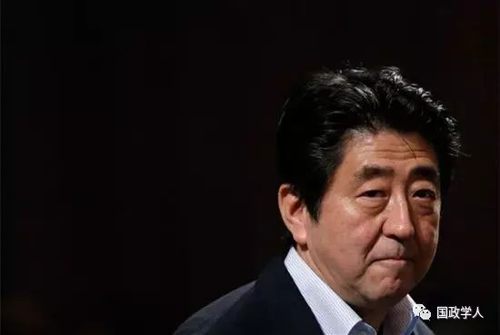
世贸组织总干事罗伯托·阿泽维多表示，“一带一路”倡议成与否主要取决于中国。为了使这一全球项目得到成功落实，北京最好能够保持本国经济的增长态势。
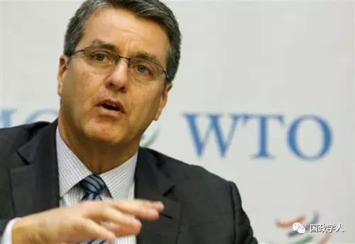
俄罗斯卫星通讯社北京5月14日电，中国国家主席习近平14日在“一带一路”国际合作高峰论坛开幕式上表示，中国将在未来3年向参与“一带一路”建设的发展中国家和国际组织提供600亿元人民币援助。
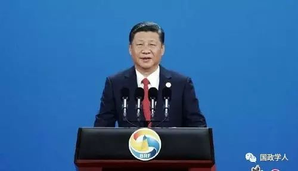
亚投行行长金立群在“一带一路”国际合作高峰论坛上表示，2017年年底之前，银行成员总数可能达到85个。
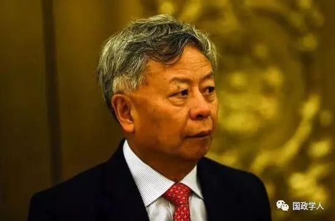
韩联社报道称，朝鲜代表团团长与韩国代表团团长在“一带一路”论坛期间举行简短会谈。
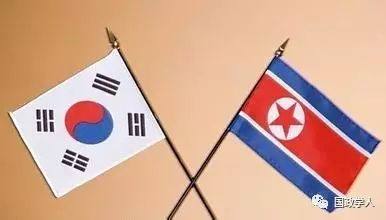
世界银行行长金墉在“一带一路”国际合作高峰论坛上表示：“应中国财政部的邀请，今天下午我们将与其他发展银行签署谅解备忘录，以支持“一带一路”倡议。
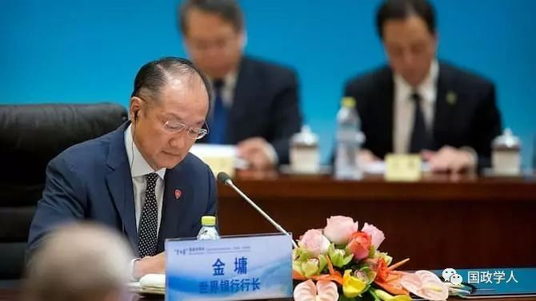
英国财政大臣菲利浦·哈蒙德称，伦敦支持中国的”一带一路“构想，愿与所有战略合作和伙伴开展工作。
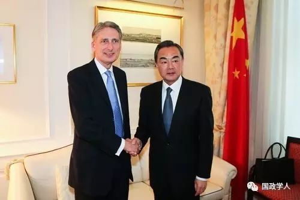
据印度报业托拉斯（PTI）消息，”一带一路“论坛有印度学者参加，但印度政府官方代表并未出席，尽管该国收到了官方邀请。
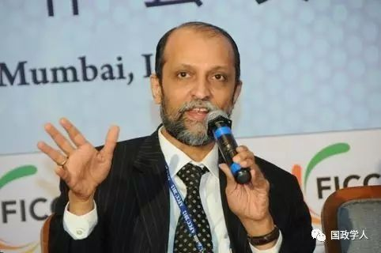
立陶宛交通与通信部部长罗卡斯·马修利斯在“一带一路”国际合作高峰论坛”加快基础设施联通“平行主题会议上发言时表示，”一带一路“国际高峰论坛，使各国成为可靠的合作伙伴。
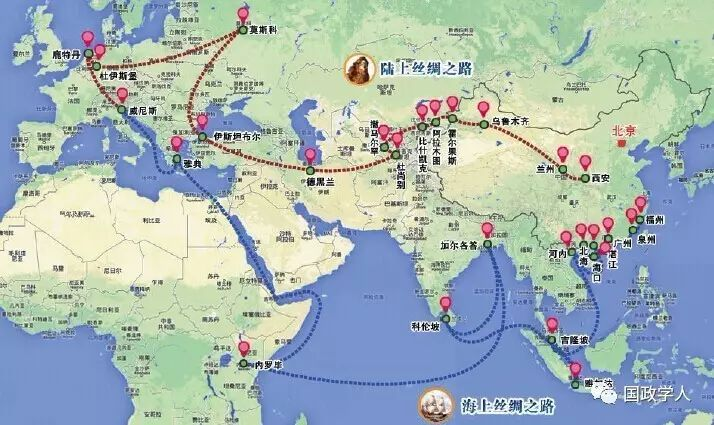
俄罗斯卫星通讯社北京5月14日电 巴基斯坦旁遮普省首席部长穆罕默德·夏巴兹·谢里夫14日在“一带一路”国际合作高峰论坛期间举办的“增进民心相通”平行主题会议上表示，中巴经济走廊的建设或将促使巴基斯坦成为能源出口国。
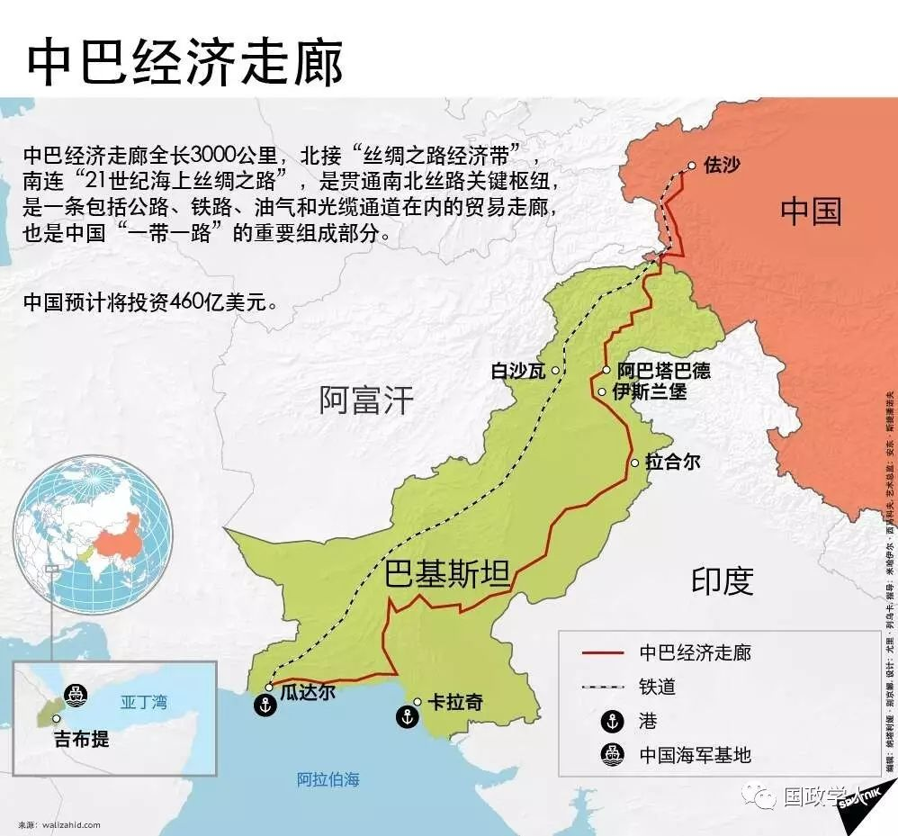
新华社北京5月14日电，国家主席习近平14日在钓鱼台国宾馆会见来华出席“一带一路”国际合作高峰论坛的俄罗斯总统普京。普京称习近平访俄将成为两国双边议程的关键事件，针对此次访问的一揽子文件正在筹备中。
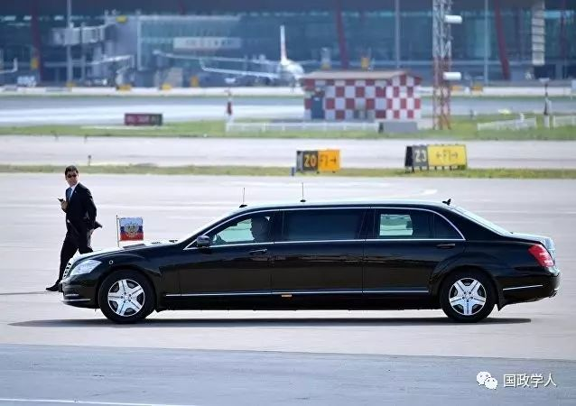
联合国秘书长安东尼奥·古特雷斯在“一带一路”国际合作高峰论坛上称”：‘一带一路’倡议是全球发展的共同愿景，中国已成为多边主义的中流砥柱。”他指出，近几十年来中国在国际外交方面取得了显著成就，发展丝绸之路是“通往全球繁荣的要道。
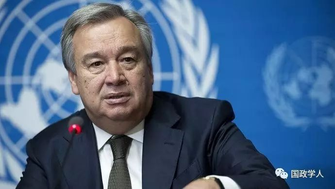
土耳其总统埃尔多安在“一带一路”国际合作高峰论坛开幕式上表示：“这个倡议将终结恐怖主义，这种合作模式将惠及各方。”他指出：“我们正在为建立经济、政治和文化领域的新互连系统做出新的努力：我们正在发展这些领域的一个新项目，它将促进经济稳定增长和发展，改善生活水平，它将是我们共同的成就。”
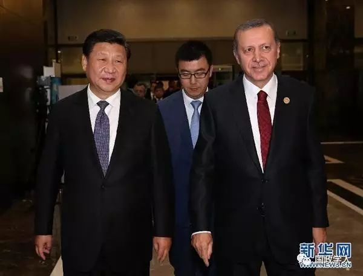
“一带一路”国际合作高峰论坛是“一带一路”提出3年多来最高规格的论坛活动，是今年中国重要的主场外交活动，对推动国际和地区合作具有重要意义。
2017年5月14日上午，习近平主席出席开幕式并发表主旨演讲，开幕式后举行高级别全体会议，5月14日下午举行以“五通”、智库交流为主题的6场平行主题会议。15日，习主席将主持圆桌峰会，包括两个阶段的会议和工作午餐。习主席还将在其后的记者会上介绍高峰论坛主要成果。论坛高级别会议将采用“1+6”模式，即1场高级别全体会议与6场主题会议。6场平行会议将聚焦“五通”和智库交流，重点围绕基础设施、产业投资、经贸合作、能源资源、金融合作、人文交流、生态环境和海上合作等八个方面展开讨论，共商合作方向，提出实施路径，凝聚合作共识，推动务实成果。
**
**
国家主席习近平在 “一带一路”国际合作高峰论坛开幕式上的演讲
携手推进“一带一路”建设
——在“一带一路”国际合作高峰论坛开幕式上的演讲
尊敬的各位国家元首，政府首脑，
各位国际组织负责人，
女士们，先生们，朋友们：
“孟夏之日，万物并秀。”在这美好时节，来自100多个国家的各界嘉宾齐聚北京，共商“一带一路”建设合作大计，具有十分重要的意义。今天，群贤毕至，少长咸集，我期待着大家集思广益、畅所欲言，为推动“一带一路”建设献计献策，让这一世纪工程造福各国人民。
女士们、先生们、朋友们！
2000多年前，我们的先辈筚路蓝缕，穿越草原沙漠，开辟出联通亚欧非的陆上丝绸之路；我们的先辈扬帆远航，穿越惊涛骇浪，闯荡出连接东西方的海上丝绸之路。古丝绸之路打开了各国友好交往的新窗口，书写了人类发展进步的新篇章。中国陕西历史博物馆珍藏的千年“鎏金铜蚕”，在印度尼西亚发现的千年沉船“黑石号”等，见证了这段历史。
古丝绸之路绵亘万里，延续千年，积淀了以和平合作、开放包容、互学互鉴、互利共赢为核心的丝路精神。这是人类文明的宝贵遗产。
——和平合作。公元前140多年的中国汉代，一支从长安出发的和平使团，开始打通东方通往西方的道路，完成了“凿空之旅”，这就是著名的张骞出使西域。中国唐宋元时期，陆上和海上丝绸之路同步发展，中国、意大利、摩洛哥的旅行家杜环、马可·波罗、伊本·白图泰都在陆上和海上丝绸之路留下了历史印记。15世纪初的明代，中国著名航海家郑和七次远洋航海，留下千古佳话。这些开拓事业之所以名垂青史，是因为使用的不是战马和长矛，而是驼队和善意；依靠的不是坚船和利炮，而是宝船和友谊。一代又一代“丝路人”架起了东西方合作的纽带、和平的桥梁。
——开放包容。古丝绸之路跨越尼罗河流域、底格里斯河和幼发拉底河流域、印度河和恒河流域、黄河和长江流域，跨越埃及文明、巴比伦文明、印度文明、中华文明的发祥地，跨越佛教、基督教、伊斯兰教信众的汇集地，跨越不同国度和肤色人民的聚居地。不同文明、宗教、种族求同存异、开放包容，并肩书写相互尊重的壮丽诗篇，携手绘就共同发展的美好画卷。酒泉、敦煌、吐鲁番、喀什、撒马尔罕、巴格达、君士坦丁堡等古城，宁波、泉州、广州、北海、科伦坡、吉达、亚历山大等地的古港，就是记载这段历史的“活化石”。历史告诉我们：文明在开放中发展，民族在融合中共存。
——互学互鉴。古丝绸之路不仅是一条通商易货之道，更是一条知识交流之路。沿着古丝绸之路，中国将丝绸、瓷器、漆器、铁器传到西方，也为中国带来了胡椒、亚麻、香料、葡萄、石榴。沿着古丝绸之路，佛教、伊斯兰教及阿拉伯的天文、历法、医药传入中国，中国的四大发明、养蚕技术也由此传向世界。更为重要的是，商品和知识交流带来了观念创新。比如，佛教源自印度，在中国发扬光大，在东南亚得到传承。儒家文化起源中国，受到欧洲莱布尼茨、伏尔泰等思想家的推崇。这是交流的魅力、互鉴的成果。
——互利共赢。古丝绸之路见证了陆上“使者相望于道，商旅不绝于途”的盛况，也见证了海上“舶交海中，不知其数”的繁华。在这条大动脉上，资金、技术、人员等生产要素自由流动，商品、资源、成果等实现共享。阿拉木图、撒马尔罕、长安等重镇和苏尔港、广州等良港兴旺发达，罗马、安息、贵霜等古国欣欣向荣，中国汉唐迎来盛世。古丝绸之路创造了地区大发展大繁荣。
历史是最好的老师。这段历史表明，无论相隔多远，只要我们勇敢迈出第一步，坚持相向而行，就能走出一条相遇相知、共同发展之路，走向幸福安宁和谐美好的远方。
女士们、先生们、朋友们！
从历史维度看，人类社会正处在一个大发展大变革大调整时代。世界多极化、经济全球化、社会信息化、文化多样化深入发展，和平发展的大势日益强劲，变革创新的步伐持续向前。各国之间的联系从来没有像今天这样紧密，世界人民对美好生活的向往从来没有像今天这样强烈，人类战胜困难的手段从来没有像今天这样丰富。
从现实维度看，我们正处在一个挑战频发的世界。世界经济增长需要新动力，发展需要更加普惠平衡，贫富差距鸿沟有待弥合。地区热点持续动荡，恐怖主义蔓延肆虐。和平赤字、发展赤字、治理赤字，是摆在全人类面前的严峻挑战。这是我一直思考的问题。
2013年秋天，我在哈萨克斯坦和印度尼西亚提出共建丝绸之路经济带和21世纪海上丝绸之路，即“一带一路”倡议。“桃李不言，下自成蹊。”4年来，全球100多个国家和国际组织积极支持和参与“一带一路”建设，联合国大会、联合国安理会等重要决议也纳入“一带一路”建设内容。“一带一路”建设逐渐从理念转化为行动，从愿景转变为现实，建设成果丰硕。
——这是政策沟通不断深化的4年。我多次说过，“一带一路”建设不是另起炉灶、推倒重来，而是实现战略对接、优势互补。我们同有关国家协调政策，包括俄罗斯提出的欧亚经济联盟、东盟提出的互联互通总体规划、哈萨克斯坦提出的“光明之路”、土耳其提出的“中间走廊”、蒙古提出的“发展之路”、越南提出的“两廊一圈”、英国提出的“英格兰北方经济中心”、波兰提出的“琥珀之路”等。中国同老挝、柬埔寨、缅甸、匈牙利等国的规划对接工作也全面展开。中国同40多个国家和国际组织签署了合作协议，同30多个国家开展机制化产能合作。本次论坛期间，我们还将签署一批对接合作协议和行动计划，同60多个国家和国际组织共同发出推进“一带一路”贸易畅通合作倡议。各方通过政策对接，实现了“一加一大于二”的效果。
——这是设施联通不断加强的4年。“道路通，百业兴。”我们和相关国家一道共同加速推进雅万高铁、中老铁路、亚吉铁路、匈塞铁路等项目，建设瓜达尔港、比雷埃夫斯港等港口，规划实施一大批互联互通项目。目前，以中巴、中蒙俄、新亚欧大陆桥等经济走廊为引领，以陆海空通道和信息高速路为骨架，以铁路、港口、管网等重大工程为依托，一个复合型的基础设施网络正在形成。
——这是贸易畅通不断提升的4年。中国同“一带一路”参与国大力推动贸易和投资便利化，不断改善营商环境。我了解到，仅哈萨克斯坦等中亚国家农产品到达中国市场的通关时间就缩短了90%。2014年至2016年，中国同“一带一路”沿线国家贸易总额超过3万亿美元。中国对“一带一路”沿线国家投资累计超过500亿美元。中国企业已经在20多个国家建设56个经贸合作区，为有关国家创造近11亿美元税收和18万个就业岗位。
——这是资金融通不断扩大的4年。融资瓶颈是实现互联互通的突出挑战。中国同“一带一路”建设参与国和组织开展了多种形式的金融合作。亚洲基础设施投资银行已经为“一带一路”建设参与国的9个项目提供17亿美元贷款，“丝路基金”投资达40亿美元，中国同中东欧“16+1”金融控股公司正式成立。这些新型金融机制同世界银行等传统多边金融机构各有侧重、互为补充，形成层次清晰、初具规模的“一带一路”金融合作网络。
——这是民心相通不断促进的4年。“国之交在于民相亲，民相亲在于心相通。”“一带一路”建设参与国弘扬丝绸之路精神，开展智力丝绸之路、健康丝绸之路等建设，在科学、教育、文化、卫生、民间交往等各领域广泛开展合作，为“一带一路”建设夯实民意基础，筑牢社会根基。中国政府每年向相关国家提供1万个政府奖学金名额，地方政府也设立了丝绸之路专项奖学金，鼓励国际文教交流。各类丝绸之路文化年、旅游年、艺术节、影视桥、研讨会、智库对话等人文合作项目百花纷呈，人们往来频繁，在交流中拉近了心与心的距离。
丰硕的成果表明，“一带一路”倡议顺应时代潮流，适应发展规律，符合各国人民利益，具有广阔前景。
女士们、先生们、朋友们！
中国人说，“万事开头难”。“一带一路”建设已经迈出坚实步伐。我们要乘势而上、顺势而为，推动“一带一路”建设行稳致远，迈向更加美好的未来。这里，我谈几点意见。
第一，我们要将“一带一路”建成和平之路。古丝绸之路，和时兴，战时衰。“一带一路”建设离不开和平安宁的环境。我们要构建以合作共赢为核心的新型国际关系，打造对话不对抗、结伴不结盟的伙伴关系。各国应该尊重彼此主权、尊严、领土完整，尊重彼此发展道路和社会制度，尊重彼此核心利益和重大关切。
古丝绸之路沿线地区曾经是“流淌着牛奶与蜂蜜的地方”，如今很多地方却成了冲突动荡和危机挑战的代名词。这种状况不能再持续下去。我们要树立共同、综合、合作、可持续的安全观，营造共建共享的安全格局。要着力化解热点，坚持政治解决；要着力斡旋调解，坚持公道正义；要着力推进反恐，标本兼治，消除贫困落后和社会不公。
第二，我们要将“一带一路”建成繁荣之路。发展是解决一切问题的总钥匙。推进“一带一路”建设，要聚焦发展这个根本性问题，释放各国发展潜力，实现经济大融合、发展大联动、成果大共享。
产业是经济之本。我们要深入开展产业合作，推动各国产业发展规划相互兼容、相互促进，抓好大项目建设，加强国际产能和装备制造合作，抓住新工业革命的发展新机遇，培育新业态，保持经济增长活力。
金融是现代经济的血液。血脉通，增长才有力。我们要建立稳定、可持续、风险可控的金融保障体系，创新投资和融资模式，推广政府和社会资本合作，建设多元化融资体系和多层次资本市场，发展普惠金融，完善金融服务网络。
设施联通是合作发展的基础。我们要着力推动陆上、海上、天上、网上四位一体的联通，聚焦关键通道、关键城市、关键项目，联结陆上公路、铁路道路网络和海上港口网络。我们已经确立“一带一路”建设六大经济走廊框架，要扎扎实实向前推进。要抓住新一轮能源结构调整和能源技术变革趋势，建设全球能源互联网，实现绿色低碳发展。要完善跨区域物流网建设。我们也要促进政策、规则、标准三位一体的联通，为互联互通提供机制保障。
第三，我们要将“一带一路”建成开放之路。开放带来进步，封闭导致落后。对一个国家而言，开放如同破茧成蝶，虽会经历一时阵痛，但将换来新生。“一带一路”建设要以开放为导向，解决经济增长和平衡问题。
我们要打造开放型合作平台，维护和发展开放型世界经济，共同创造有利于开放发展的环境，推动构建公正、合理、透明的国际经贸投资规则体系，促进生产要素有序流动、资源高效配置、市场深度融合。我们欢迎各国结合自身国情，积极发展开放型经济，参与全球治理和公共产品供给，携手构建广泛的利益共同体。
贸易是经济增长的重要引擎。我们要有“向外看”的胸怀，维护多边贸易体制，推动自由贸易区建设，促进贸易和投资自由化便利化。当然，我们也要着力解决发展失衡、治理困境、数字鸿沟、分配差距等问题，建设开放、包容、普惠、平衡、共赢的经济全球化。
第四，我们要将“一带一路”建成创新之路。创新是推动发展的重要力量。“一带一路”建设本身就是一个创举，搞好“一带一路”建设也要向创新要动力。
我们要坚持创新驱动发展，加强在数字经济、人工智能、纳米技术、量子计算机等前沿领域合作，推动大数据、云计算、智慧城市建设，连接成21世纪的数字丝绸之路。我们要促进科技同产业、科技同金融深度融合，优化创新环境，集聚创新资源。我们要为互联网时代的各国青年打造创业空间、创业工场，成就未来一代的青春梦想。
我们要践行绿色发展的新理念，倡导绿色、低碳、循环、可持续的生产生活方式，加强生态环保合作，建设生态文明，共同实现2030年可持续发展目标。
第五，我们要将“一带一路”建成文明之路。“一带一路”建设要以文明交流超越文明隔阂、文明互鉴超越文明冲突、文明共存超越文明优越，推动各国相互理解、相互尊重、相互信任。
我们要建立多层次人文合作机制，搭建更多合作平台，开辟更多合作渠道。要推动教育合作，扩大互派留学生规模，提升合作办学水平。要发挥智库作用，建设好智库联盟和合作网络。在文化、体育、卫生领域，要创新合作模式，推动务实项目。要用好历史文化遗产，联合打造具有丝绸之路特色的旅游产品和遗产保护。我们要加强各国议会、政党、民间组织往来，密切妇女、青年、残疾人等群体交流，促进包容发展。我们也要加强国际反腐合作，让“一带一路”成为廉洁之路。
女士们、先生们、朋友们！
当前，中国发展正站在新的起点上。我们将深入贯彻创新、协调、绿色、开放、共享的发展理念，不断适应、把握、引领经济发展新常态，积极推进供给侧结构性改革，实现持续发展，为“一带一路”注入强大动力，为世界发展带来新的机遇。
——中国愿在和平共处五项原则基础上，发展同所有“一带一路”建设参与国的友好合作。中国愿同世界各国分享发展经验，但不会干涉他国内政，不会输出社会制度和发展模式，更不会强加于人。我们推进“一带一路”建设不会重复地缘博弈的老套路，而将开创合作共赢的新模式；不会形成破坏稳定的小集团，而将建设和谐共存的大家庭。
——中国已经同很多国家达成了“一带一路”务实合作协议，其中既包括交通运输、基础设施、能源等硬件联通项目，也包括通信、海关、检验检疫等软件联通项目，还包括经贸、产业、电子商务、海洋和绿色经济等多领域的合作规划和具体项目。中国同有关国家的铁路部门将签署深化中欧班列合作协议。我们将推动这些合作项目早日启动、早见成效。
——中国将加大对“一带一路”建设资金支持，向丝路基金新增资金1000亿元人民币，鼓励金融机构开展人民币海外基金业务，规模预计约3000亿元人民币。中国国家开发银行、进出口银行将分别提供2500亿元和1300亿元等值人民币专项贷款，用于支持“一带一路”基础设施建设、产能、金融合作。我们还将同亚洲基础设施投资银行、金砖国家新开发银行、世界银行及其他多边开发机构合作支持“一带一路”项目，同有关各方共同制定“一带一路”融资指导原则。
——中国将积极同“一带一路”建设参与国发展互利共赢的经贸伙伴关系，促进同各相关国家贸易和投资便利化，建设“一带一路”自由贸易网络，助力地区和世界经济增长。本届论坛期间，中国将同30多个国家签署经贸合作协议，同有关国家协商自由贸易协定。中国将从2018年起举办中国国际进口博览会。
——中国愿同各国加强创新合作，启动“一带一路”科技创新行动计划，开展科技人文交流、共建联合实验室、科技园区合作、技术转移4项行动。我们将在未来5年内安排2500人次青年科学家来华从事短期科研工作，培训5000人次科学技术和管理人员，投入运行50家联合实验室。我们将设立生态环保大数据服务平台，倡议建立“一带一路”绿色发展国际联盟，并为相关国家应对气候变化提供援助。
——中国将在未来3年向参与“一带一路”建设的发展中国家和国际组织提供600亿元人民币援助，建设更多民生项目。我们将向“一带一路”沿线发展中国家提供20亿元人民币紧急粮食援助，向南南合作援助基金增资10亿美元，在沿线国家实施100个“幸福家园”、100个“爱心助困”、100个“康复助医”等项目。我们将向有关国际组织提供10亿美元落实一批惠及沿线国家的合作项目。
——中国将设立“一带一路”国际合作高峰论坛后续联络机制，成立“一带一路”财经发展研究中心、“一带一路”建设促进中心，同多边开发银行共同设立多边开发融资合作中心，同国际货币基金组织合作建立能力建设中心。我们将建设丝绸之路沿线民间组织合作网络，打造新闻合作联盟、音乐教育联盟以及其他人文合作新平台。
“一带一路”建设植根于丝绸之路的历史土壤，重点面向亚欧非大陆，同时向所有朋友开放。不论来自亚洲、欧洲，还是非洲、美洲，都是“一带一路”建设国际合作的伙伴。“一带一路”建设将由大家共同商量，“一带一路”建设成果将由大家共同分享。
女士们、先生们、朋友们！
中国古语讲：“不积跬步，无以至千里。”阿拉伯谚语说，“金字塔是一块块石头垒成的”。欧洲也有句话：“伟业非一日之功”。“一带一路”建设是伟大的事业，需要伟大的实践。让我们一步一个脚印推进实施，一点一滴抓出成果，造福世界，造福人民！
祝本次高峰论坛圆满成功！
谢谢大家。
筛选：早安老师、里仝
编辑：里仝
**
**